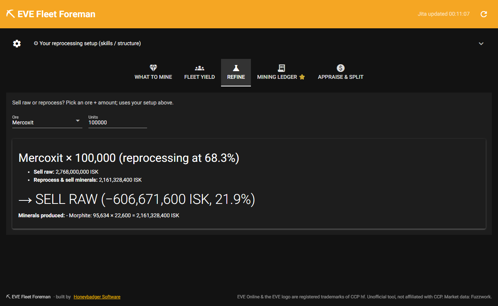
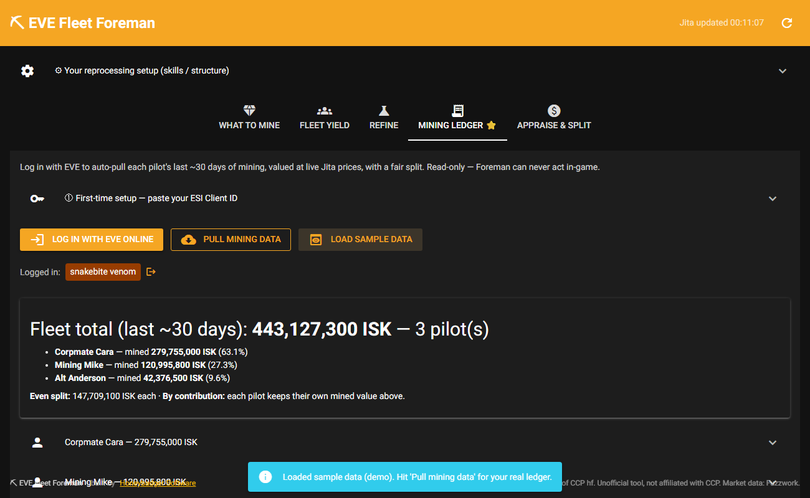

Stop alt-tabbing to spreadsheets and market sites while you mine. EVE Fleet Foreman tells you what to mine for the most ISK, whether to refine or sell, and splits your fleet's ore fairly — using live Jita prices and your own Mining Ledger. Free, open-source, and 100% EULA-safe.

Foreman pulls live Jita market data and ranks every ore by ISK per m³ — the number that actually decides your income. It compares selling the ore raw against reprocessing it at your refining efficiency, so you always pull the most valuable rock in the belt.

Pick an ore and an amount and Foreman gives you a clear "SELL RAW vs REFINE" verdict — with the full mineral breakdown — using real reprocessing yields from CCP's Static Data Export and your station/skill efficiency. No more guessing or hand-built spreadsheets.
Log in with your EVE account and Foreman pulls each pilot's last ~30 days from the Mining Ledger, values it at live prices, and computes a fair split — even or by-contribution. The "who mined what" argument, gone. It's read-only: Foreman can never undock, trade, or touch anything in-game.

| Game | EVE Online (Tranquility) |
|---|---|
| Platform | Windows 10 / 11 download — or run from source (Python) |
| Live data | Jita market prices (Fuzzwork) + CCP ESI + Static Data Export |
| Account access | Read-only Mining Ledger via official EVE SSO — revocable any time, never your password |
| EULA | 100% compliant — no client interaction, no input automation, no broadcasting |
| License | MIT — fully open source on GitHub |
| Price | Free · feed the badger if it saves your fleet time |
Early release — bug reports and feature ideas are very welcome on the GitHub Issues page. The Windows build is unsigned for now, so SmartScreen may warn on first run — choose More info → Run anyway.
Download the free Windows build, or read the source and star it on GitHub.